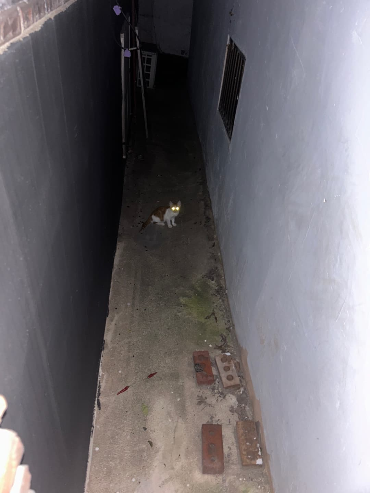

퇴근 후 집에 들어가려는 순간 골목에서 후다닥. 왠 덩어리가 지나갔다. 처음으로 고양이를 발견한 것이다. 알고보니 우리집 화단과 화분을 망가트리는 고양이라고. 우리집에서 나만 몰랐던 고양이의 존재. 엄마 아빠와는 퍽 알고지냈던, 말썽 고양이였다.

2024-08-30
Name Kkali Shin / Born in A street in Seongsu-dong, Seoul / Estimated Date of Birth April 12, 2024 / Gender ♀️ / Weight 3 kg / Can Opener Naree Shin / Enemy Taelim Kim / Youtube
퇴근 후 집에 들어가려는 순간 골목에서 후다닥. 왠 덩어리가 지나갔다. 처음으로 고양이를 발견한 것이다. 알고보니 우리집 화단과 화분을 망가트리는 고양이라고. 우리집에서 나만 몰랐던 고양이의 존재. 엄마 아빠와는 퍽 알고지냈던, 말썽 고양이였다.
귀여운 놈
이 고양이를 만나려고 동네를 틈틈이 뒤적거리고 다니던 어느 날, 이 녀석과 느닷없이 마주했다. 하필 츄르가 없는 날. 편의점에 급히 다녀오니 고양이는 사라지고 없었다.
고양이가 다녀간 흔적. 화단의 풀이 짓눌려 있다.
이 고양이를 위해 매일매일 차 밑을 살피고 고양이 간식을 가방에 넣어다녔다. 그리고 드디어 고양이와 만났다.
잘 먹는다.
김태림이 고양이 사진을 몇 번 보더니 본인도 만나야겠다며 성수동에 왔다. 어쩐 일인지 김태림과 고양이가 쉽게 만날 수 있었다.

급한대로 챙겨준 고양이 밥. 종이컵은 근처 편의점 어묵바에서 가져왔다...
그래도 도망가진 않는 고양이.
‘입에 카레 묻히고 다니네.’ 하더니 고양이에게 ‘깔리’라는 이름을 지어주었다. ‘깔리’는 혜화에서 가장 평점(4.3)이 높은 인도커리 음식점으로 나와 김태림이 지금까지도 즐겨 가는 곳.
어제와 같은 시간에 집 앞에 가보니 깔리와 만날 수 있었는데, 김태림은 깔리가 겨울에 얼어죽을테니 얼른 데리고 가자며 재촉했다. 그렇게 갑작스런 김태림의 활약으로 깔리를 작업실에 데려다 놓았다. 김태림은 깔리가 츄르에 정신팔린 사이 차에 태웠고, 깔리는 차 안에서 이리저리 날뛰며 울어댔다.
오늘도 결국 나오지 않았다. 친구 박지연이 깔라만시라는 별명을 지어주었다.
쇼파 밑에서 10시간을 버틴다. 절대 나가지 않겠다는 굳은 의지. 밤 열시경엔 참다 참다 나온 것 같았다. 모습을 드러내는줄 알았으나 그새 구석으로 숨었다.
삐옹 삐옹 운다. 살짝 짜준 츄르를 보고 나왔다. 무척 감격스러웠는데 놀랄까봐 소리를 지를 수 없었다. 잠깐이나마 만질 수 있었다.
화분이 쓰러져있다.
츄르를 짜주면 한참을 울다가 나온다. 낮 열두시경 나와서 작업실을 돌아다니기 시작했다. 어제보다 더 큰 반경인 것이 놀랍다. 큰소리가 나거나 가까이 가면 호다닥 다시 구석으로 숨는다. 하수구 구멍에서 새어나오는 빛을 좋아하는 것 같다.
깔리 최초 목욕. 강제로 잡아다 목욕을 시켰고, 여자 아이라는 것을 알게되었다. 목욕 후에 더 열받은 것 같다.
왜케 작냐...
흥미로워.
프린터 전원을 켜고, 도어를 열어놨다. (약간 대단하다고 생각)
외부 행사 때문에 며칠째 오랜시간 나가있었더니 친해질 기미가 없다. 겁이 많아보이는데 특히나 김태림을 경계한다. 아마도 본인을 잡아둔 이상한 존재라고 생각하나보다.
갈기갈기 찢긴 고무나무와 작은 화분들을 정리하기로 했다...
작업실을 나서려는 순간 깔리의 시선이 느껴졌다. 나를 보러 나왔을까. 처음있는 일이다.
쓰레기통을 헤집어 놓았다.
ㅎㅎㅎ
깔리는 아무래도 겁이 너무 많다. 당당 깔리를 만들기 위해 유튜브 영상을 찾아보고 있다.
화장실 상자의 높이가 영 낮은지 작업실이 놀라운 속도로 더러워진다. 김태림이 박스 높이를 수정하여 화장실을 리모델링했다.
깔리가 컴퓨터하는 나에게 처음으로 관심을 보였다. 어머나?
깔리가 방충망을 다 뜯어놨고, 나와 김태림은 모기에 뜯기고 있다.
깔리가 제법 내 자리를 맴돈다. '깔리의 마음 얻기' 승부에서 김태림을 이긴 것 같다.
깔리를 위한 웹사이트를 만들고 있다. 자기 전에도 깔리가 생각나고, 밖에 나와있으면 자꾸만 깔리가 생각난다. 숏폼 따위보다 깔리 영상이 더 중독적이다.
깔리에게 사냥놀이를 가르치기 시작했다.
김태림을 바라보는 눈빛.
아직도 깔리는 구석에서 시간을 자주 보낸다. 주로 김태림보다는 내가 부르면 곧잘 나온다. 처음으로 만난 인간 동료가 나라서 그런 것 같기도.
처음으로 병원에 다녀왔다. 몸무게는 2.5kg.
겁에 질린 깔리가 안쓰럽다가도 좀 웃겼다. 대체 왜 저렇게 겁이 많아.
깔리는 여전히 많은 시간을 숨어서 지낸다.
깔리를 위해 심은 밀에 싹이났다. 깔리가 아작 아작 먹는다.
털뭉치 장난감을 좋아하는 깔리
충성
신깔리 적응 완료
츄르를 먹을 때 손을 쓰기 시작했다.
깔리는 자주 기지개를 켠다. 구석에 숨어있느라 뻐근하겠지.
깔리가 사라진 집 앞 화단에 꽃이 폈다.
깔리의 예전 화장실도 활기를 되찾았다.
으쨔
내가 가장 좋아하는 깔리의 표정. 사냥놀이 할 때 집중하는 표정이다. 드릉 드릉.
깔리가 사냥놀이를 즐기는 것 같다. 손을 꽤 잘 쓰는 듯.
가습기가 궁금해.
일할 때 시선이 느껴지곤 하는데...
깔리는 바스락 소리가 나는 걸 공처럼 구겨주면 좋아한다.
다 들어가 봐야지 모.
이제는 딱히 숨어있을 생각이 없나보다. 이곳저곳을 누비며 드러누워 있다.
깔리는 굴러가는 걸 좋아한다. 축구선수 시켜야하나.
솜방망이부터 들이대.
김태림이 찍은 photogenic kkali
이제는 깔리가 구석에서 나와서 잠을 잔다. 은근히 우리를 좋아하는 것 같은데... 근데 이제 조금이라도 큰 소리가 나거나 인기척을 보이면 바로 눈을 부릅뜨는.
깔리가 퇴근할 때마다 나와서 지켜보기 시작했다. 맴찢...
깔리가 나를 졸졸 따라다니기도 한다. 나 좋아하냐.
얘 어디갔나 싶으면 내 의자에 올라가 있다.
출근해서 깔리를 찾으면 꼭 이 구석탱이에서 나온다. 누가 들어오는 소리가 나면 호다닥 숨는건지. 이것만은 변함이 없다.
유튜브를 보고 박스 장난감을 만들었다. 간식을 숨겨주니 잘 꺼내 먹는다. 기특 깔리.
김태림이 꺼끌꺼끌한 면을 좋아할거라고 하면서 라꾸라꾸를 꺼내놨다. 신난 깔리는 한참을 날뛰었다.
어느새 깔리는 장난감도 잘 가지고 놀고, 사냥놀이도 잘 하고, 밥도 잘 먹고, 잠도 잘 잔다. 다만 인간이 만지는건 잘 허락하지 않는다.
명장면
신깔리 인생 첫 눈
폭설이 내린 날 깔리를 데려오길 참 잘했다는 생각을 했다.
깔리는 여느 고양이처럼 창문을 좋아한다. 캣타워나 선반 같은걸 해줄 때가 된 것 같다.
깔리의 얼빡샷 찍는 재미가 쏠쏠하다.
바쁘다는 핑계로 아직 그럴듯한 집을 마련해주지 못했는데, 날씨가 훅 추워졌다. 작업실에 있는 거적때기를 모아 누더기 집을 만들어주었다.
추울까봐 물주머니도 따뜻하게 데워서 넣어줬다. 따뜻한지 물주머니에 기대서 잠을 잔다.
다 들어가 봐야지 모.
나를 슬쩍 비비고 간다. 나 좋아하네.
고양이 털... 아 돈 케어...

깔리가 이제 대놓고 나와서 드러눕거나 요상한 자세를 선보이기 시작했다.
아침에 출근하면 자다 깬 얼굴로 마중을 나왔다. 그동안은 숨어있던 깔리를 몇 번이고 불러야만 나왔는데. 장족의 발전. 감동실화.
패딩이 궁금해
김태림이 다람쥐 영상을 틀어놓았다. 다람쥐가 나올 때 집중해서 보는 깔리 뒷통수가 미치게 귀엽다. 다람쥐를 찾는건지 TV 뒷쪽을 살피기도 한다. 나라는 시끄럽지만 깔리의 일상은 너무나 무해해...
깔리 최초 셀카
비켜줄래?
김태림과 신깔리 서로를 견제중
깔리가 퇴근할 때마다 어딜 가냐는 듯이 쳐다보는데 마음이 찌릿하다. 깔리랑 하루 종일 같이 있고파.
잠을 귀엽게도 자는군
꼬리를 아주 야무지게 감아 놓는 깔리. 이 꼬리말기 자세도 자주 선보인다.
털실에 엄청난 반응을 보였다. 다른 좋은 장난감은 제쳐두고 실뭉치 따위를 가장 좋아했네.
가끔 자세가 좀...
깔리와 캔따개(본인)의 최초 셀카
교감
나에게 파고든 것 같지만 도망가는 애 잡아서 빗질 하는 중이다.
아잇 깜짝이야.
돌돌이가 궁금해
어깨가 좁은데 배가 빵빵해진 요즘의 체형. 깔리가 뚱뚱한건지 아닌건지, 인간 둘은 밥을 제대로 주고 있는건지 아닌건지 도대체 모르겠다. 깔리는 식탐이 너무나도 대단해서 매일 시도 때도 없이 배고프다고 울어댄다.
기온이 영하로 떨어지면서 제법 추워졌다. 깔리 집에 새 방석과 전기장판을 놓아 주었다.
신발도 바닥도 다 뜯어놓지만 아 돈 케어...
빗자루가 궁금해
자고 일어난 깔리. 더 자.
깔리는 여전히 인간 손이 닿는걸 싫어한다. 하루에 딱 한 번 얼굴과 목덜미 만지는걸 허락해주는데, 그게 언제냐면 아침에 반갑다고 마중 나왔을 때. 이 때만 잠시 깔리를 안고 만져볼 수 있다.
인생 두 번째 병원. 주사 꽂히고 열받았나 본데.
동공이 커졌다는건 겁에 질렸다는 것
이런 눈은 또 처음 봤네. 그렇게 무서왕?
어느새 3kg가 된 깔리. 통통한 편이라는 진단을 받았다. 그럼 그렇지... 간식은 이제부터 반으로 줄이기로. 그나저나 병원에서만 볼 수 있는 긴장한 표정이 몹시 웃기다.
한쪽 팔 빼놓고 자는 모습 so cute.
순간이동
우다다
우다다
자세가 좀...
오늘따라 유난히 깔리 몸집이 크고 길어보인다. 언제 이렇게 컸대.
이 표정이 너무 좋다. 궁금해 궁금해 너무 궁금해서 못 참겠어 표정.
부쩍 깔리가 무는 일이 잦아졌다. 놀아달라고 무는건지. 발가락과 손가락을 물고 솜방망이를 날린다. 물론 전혀 아프진 않다. 하지만 문제는 성묘가 되어 물면 상처가 날 수 있다고...(!) 이걸 어째 고쳐야할지 고민이다. 그만 물어.
그렇게 아련하게 쳐다보면 내가 어떻게 가냐고...
캔따개랑 노는게 제일 좋아
끈이란 끈은 다 좋아
털실: 최고의 놀잇감
내 옆에서 뒹굴 뒹굴 놀거나 그러다 잠을 자거나 식빵을 굽거나 하여간 근처에서 맴도는 존재가 있어 행복한 캔따개의 삶.
좋아보여.
김태림이 궁금해

굳이 내 책상 아래에 있어야 함
깔리가 있던 화단은 겨울나기에 돌입했고, 작은 수조의 물은 꽁꽁 얼었다.
깔리랑 사진 찍기
표정이 아주 투명해서 좋기는 한데.

새로 심은 밀에 싹이 났다. 가릴 것 없이 다 잘 먹는 먹짱 깔리. 잘 먹는게 좋은거랬어.
요즘은 김태림에 대한 경계가 풀어졌는지 김태림 발꿈치를 슬쩍 치고 또 가끔은 따라다닌다. 참 오래도 걸린다. 분명 깔리를 구한 건 김태림인데.
구석에 쌓아둔 나무 목재가 많아 무려 캣타워를 만들어 주었다. 깔리를 위해 뭐든지 다 할 기세. 발 돋움대가 약간 부실한 건 고쳐야겠다. 깔리는 높이가 마음에 드는지 캣타워에 올라가 우리를 관찰하기도 한다.
Last Updated 2026-02-21